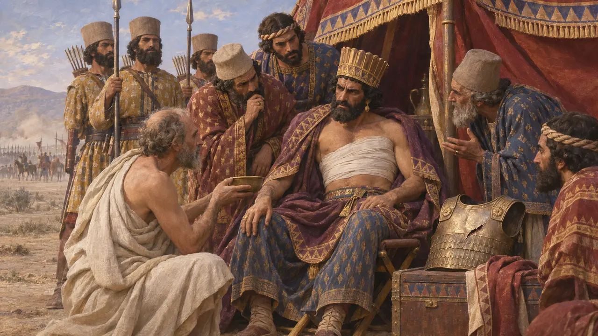
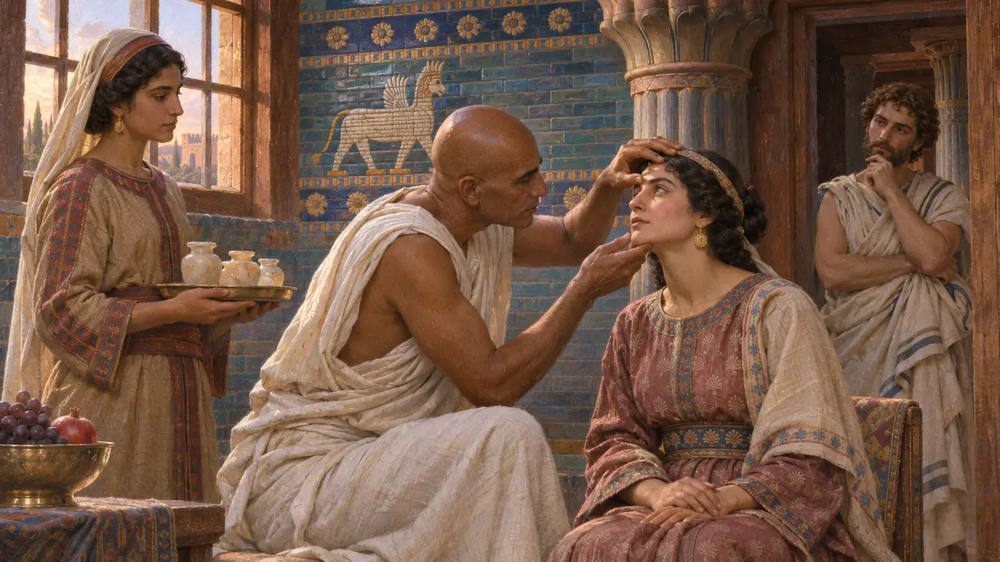
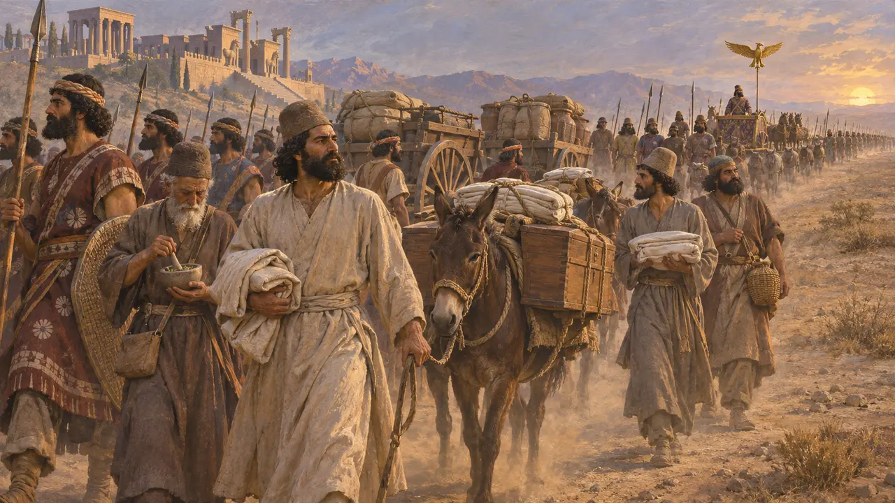

King's Physician
Doctors who marched with the King's army
The King kept doctors at his court, and some rode with him to war. Ctesias, a Greek physician of Artaxerxes II, was on the field at Cunaxa in 401 BCE and said he treated the King's own wound. In the game such men march with the King's soldiers on the great fields.
ゲームでは： In the game the King's men bring a physician to every forty of them, up to two hundred, standing back with the bowmen. Each walks to the wounded and tends them. They go home with the King's army and not to your town.

With the King at Cunaxa
古代の記述When Cyrus the Younger charged his brother at Cunaxa and wounded him through the breastplate, Ctesias says he himself healed the wound. Xenophon, who fought on the other side, cites him for the story.
Xenophon, Anabasis 1.8.26

Physicians of the court
古代の記述Herodotus describes Egyptian doctors at the Persian court in Darius' day, and the Greek Democedes after them. The sources speak of such men treating the King and his household far more often than his soldiers.
Herodotus 3.129-132

What the game imagines
係争中How many doctors marched with a Persian army is unknown. One for every forty men is a rule of this game, chosen so the wounded can last longer in its battles, and no ancient author gives a figure.
No direct evidence; the game's reconstruction
出典
- Xenophon, Anabasis 1.8.26
- Herodotus 3.129-132